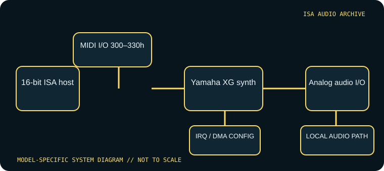

[ INDIVIDUAL COMPONENT // SOUND HARDWARE ]
Yamaha SW60XG
The SW60XG is a 16-bit ISA XG sound card with analog audio I/O and Yamaha’s XG synthesis. Its host-facing MIDI port is configurable by jumper; do not confuse the ISA card with Yamaha’s external MU-series modules or assume Sound Blaster DSP compatibility.

Model-specific specifications
| Catalog identity | Yamaha SW60XG / SW60XGE; confirm model label and the jumper table in the owner’s manual. |
|---|---|
| Bus / host | 16-bit ISA expansion slot. Yamaha’s owner documentation lists Windows 3.1 or later as the supported driver environment and MS-DOS 5.0 or later for its Windows 3.1 setup context. |
| Sound engine / I/O | XG-compatible Yamaha wavetable synthesis with stereo output, line input and microphone input; internal CD audio input is available. The MIDI interface port jumper selects 300h, 310h, 320h or 330h (default 300h in the scanned manual). |
| IRQ | No IRQ is listed for MIDI/XG playback in the SW60XG manual; it routes MIDI data through the configured I/O port. |
| DMA | No DMA channel is listed for the card’s MIDI/XG function. It is not an ISA Sound Blaster PCM-DMA device. |
| Software / host compatibility | Use the Yamaha SW60XG driver and select the same MIDI base address in driver configuration as the physical jumper. Windows 3.1-era host software and MIDI applications are the documented target; the card is not a substitute for SB-compatible digital effects. |
| Connections / power | Analog mic/line/output and CD-IN connectors; microphone-type jumper configures the input circuitry. Yamaha specifies powered speakers or line-level equipment at the output. |
Compatibility & configuration notes
The owner’s manual is decisive on the card’s resource model: only the MIDI port address is selected (300h–330h), and no IRQ/DMA resource is specified for its synthesis path. The selected driver address must match the physical jumper. The manual also sets a useful host boundary at a 16-bit ISA slot and period Windows environment; lack of a DMA channel does not mean the card has no analog audio I/O. Document the jumper, driver, microphone setting, and connected CD input separately.
- Photograph model/revision markings, resource switches or jumpers, connector panel and installed options before installation.
- For every configured IRQ, DMA channel, I/O address and driver, record the actual setting used by the host; do not rely on a family name or an assumed default.
- Power down and unplug the host before fitting or removing an ISA card; retain period setup tools and documentation with the specimen.
Sources & archival documentation
- Internet Archive — Yamaha SW60XG owner’s manualScanned Yamaha owner’s manual; installation, ISA requirements, jumpers, and software setup.
- ManualsLib — Yamaha SW60XG owner’s manualReadable owner-manual copy useful for cross-checking the archived scan.
Where related model variants exist, the original manual and the physical card’s complete part/revision marking take precedence over generalized family summaries.